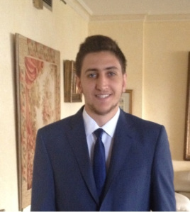

About Me!

My passion in engineering started when I was a little kid watching my neighbor who was a mechanic. How he would assemble cars, fix parts, and ultimately come up with a roaring engine always left me perplexed. I remember the first time I asked to help
him with fixing a carburetor, and from then, I knew that I already had my calling. Mechanical engineering then became my sole target. The only difference between his passion and mine was that I decided not to pursue the motor vehicle field, but instead,
focus on mechatronics and robotics.
I have to admit that my passion and love for engineering were increased while I was doing my undergraduate studies as a mechanical engineer at the Lebanese American University. I recently graduated from New York University with an M.S. degree in mechatronics
and robotics. My research work at NYU Mechatronics and Controls Laboratory involves working with different type of robots to facilitate the life of persons with physical disabilities.
My technical expertise includes fluency in various programming languages (C/C++, C#, Java, Linux, LabVIEW, MATLAB/Simulink, OpenCV, Python, ROS, Wolfram), proficiency in many other software (ANSYS, AutoCAD, ROS, Primavera, Microsoft office, Lingo, Jump,
CATIA, CadSoft Eagle, Solidworks), and advanced Android app development.
I am an experienced team lead with a demonstrated history of working in the higher education industry with the aim of promoting robotic teaching for high school students. I was also able to work in Middle East Airline (MEA) company where I gained experience
while performing checks on different types of airplanes. Aside from Engineering, I learned sales and marketing skills while working as a part-time Salesperson. During my summer holidays, I worked at a flour industry to broaden my knowledge and experience.
Mechanical engineering, and especially mechatronics and robotics, is my hobby and my passion at the same time. During weekends and vacations, I enjoy working on several projects and build different systems that help me develop my knowledge and skills.